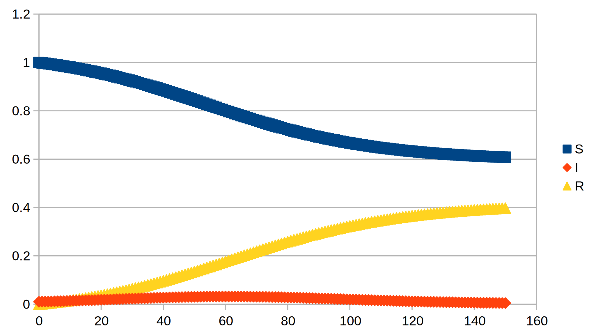

SIR models and Covid-19 spread
This is being written in early April 2020 from the United Kingdom (UK). A few weeks ago a friend sent me theoretical material on a model often used to understand the spread of disease. I had already done some preliminary spreadsheet presentations on UK data and extracted a rough idea of the rate of spread, using an exponential model. At that time, mid-March 2020, I had found that an exponential model would have the entire UK population infected by the virus within 40 days. That's less than 20 days from now.
In real life, exponential growth does not continue for ever. More sophisticated modeling uses a number of different approaches. For example, stochastic models set up scenarios with people-like objects subject to random influences that researchers imagine are relevant to the spread of the disease. The model is run many times and in many variations, speculative conclusions made, and plans drawn up. The plans depend on the relative and overlapping values placed by different societies on life, “the economy”, future prospects, class, the elderly, ethnicity, etc.
Here, we look at a discretized form of a compartmentalized deterministic model that splits the population into three parts: susceptible (S), infected (I), and recovered (R). Collecting the three parts as “SIR” gives the name to the model. On any given day, some susceptible people become infected and some infected people recover (hopefully). For simplicity, we also include death as a form of “recovery”, although to the victim or their family it is not. [Wondering here if a fourth compartment “(L)oss” could be set up, which would account for overwhelmed health services, or “businesses” in some countries.]
Mathematical details (click to reveal)
So how does the SIR model work? The proportion of susceptible people who become infected on a day depends on the number of infected people they are likely to contact. This reduces the pool of susceptibles. Using the common symbol “Δ” to represent the change we have:
\[\Delta S = - \alpha SI\]
The symbol S represents the susceptible pool, I the infected pool, and α some constant. Putting these symbols together indicates that they should be multiplied.
So we have increased the number of infected people, but we also have to account for the fact that a proportion of people recover if they are infected. The changes here are the increase from newly infected people and decrease from recovery:
\[\Delta I = + \alpha SI - \beta I\]
The new feature here is the constant β. Recovery is an individualized process. The sequence is completed with the change in R:
\[\Delta R = + \beta I\]
Notice that if we add up all the changes:
\[\Delta S + \Delta I + \Delta R = - \alpha SI + \alpha SI - \beta I + \beta I = 0\]
The total number of people (S+I+R) doesn't change, just their assignments to the compartments.
There are a number of valid criticisms of the model. The most obvious to me is that the disease doesn't act on a day-to-day timetable, but its action is spread over a period of around two weeks: a latent period where the victim doesn't have enough viral load to infect others (significantly?), the most dangerous infectious period where they don't appear sick, then the sickness itself, which also appears to have stages, before, hopefully, recovery. During the sick period, those at risk are family carers or, if necessary, hosptial staff, so there is a different infection dynamics. All these factors mean the daily data put out by government contain all sorts of the delay factors in terms of the spread dynamics.
For the purpose of this article, my main concern is to show how one might get a handle on the gross α and β parameters from the data presented by governments.
Exponential growth
I used data from this website:
https://www.gov.uk/government/publications/covid-19-track-coronavirus-cases — I assume other countries have something similar [May update: this site became increasingly difficult to use as the developers made it more “user-friendly”. https://github.com/tomwhite/covid-19-uk-data may be useful to others.]. When this is all over, this link will presumably be retired at some point in the future. The “daily confirmed cases” link leads to a page where a xlsx table can be downloaded, updated daily.
The present version allowed me to construct this graph:

The y-axis is new daily cases, and the exponential formula was a fit for an “exponential” trend line that my spreadsheet software (Libre) allows me to display.
When studying exponentials, it can be handy to use a logarithmic scale:
This has converted the exploding “hockey-stick” curve into a straight line, but notice that the distances between factors of ten are the same in the sequence 1-10-100-1000-10000.
The important point for me is the trendline formula fit and the part multiplying “x” in the exponential. Here it is about 0.16. To go any further in the decimal is to fool yourself that you are being more accurate, given the variation about the curve. In mid-March, this number was higher, about 0.2 or more.
We can do the same thing for the cumulative reports:
Hopefully you don't need me to tell you which version has a logarithmic scale. The exponential factor here is 0.17. It is also perhaps clearer that the growth factor was higher in mid-March. This is a positive sign indicating that social behaviour has changed to reduce the infection rate. It could also be a result of there being a reduced susceptible pool. At this point there are about 1/1000 of the UK population (almost 70 million) who have been confirmed as infected. The current confirmed deaths is more than 6000, about 10% of the confirmed cumulative infection. Many more presumably are self-isolating, but are not confirmed (and never will be without mass testing for antibodies and such). Will some of these people die without help and care in their final moments? The cynic in me suspects that there will be pressure to sweep some of these stories under the rug to avoid criticism of the government's performance.
For what it's worth, the daily death “x-factor” is about 0.18, and the cumulative 0.24. These are more reflective of my mid-March figures for infection with a two-three week delay in response.
Mathematical details (click to reveal)
Why am I just slapping the same process on different sets of figures. The first point is that different ways of dicing up the exponential growth should lead to similar x-factors, and largely they do, except for the cumulative death's 0.24. When you are dealing with the early stages of an infection (and other exponential-type processes), the initial form for the daily infection reports should go as:
\[\Delta I = + \gamma I\]
If the cumulative number of infections (I) is growing exponentially, so will the daily reports (ΔI), multiplied by the γ-factor. The death statistics can also be treated with appropriate factors. In our case γ can be determined using the exponential function. The x-factor of 0.15 corresponds to \(\gamma = \exp\left( 0.15 \right) - 1 = 0.16\). You may have noticed that \(0.15 \approx 0.16\). This is not an accident: the smaller the x-factor, the closer γ will be to it. This is built-in to the exponential function. In a future life (if I have one), I may explain this.
In our SIR model, the γ-factor is:
\[\gamma = + \alpha S - \beta\]
Assuming that we know “S”, we need another piece of information to tie down the α and β parameters.
Reproduction number
When I first started looking at this in mid-March, I found an estimate of something called the reproduction number as being around 2.5. I have since seen further guesses in the range 2-3.5. In terms of the SIR model, the reproduction number is:
\[R_{0} = \frac{\alpha S}{\beta}\]
When R0 (no relation to R) is greater than 1, the number of new infections is greater than the numbers passing out into recovery (and non-infectivity). Happiness is achieved when the reproduction number is less than 1, because then the infection is on the way to dying out.
I have also seen the reproduction number described as the average number of new infections created by an infected person. Let's see how that joins up with the formula above. There is a differential calculus route, which if you know what you're doing is simpler. But I am assuming many people are not comfortable with such things, and it all seems to be a bit hocus-pocus. To some, even what I've done above will be like that, but they probably won't be reading this sentence. However, if the discrete approach used seems reasonable, maybe we can go forward.
Mathematical details (click to reveal)
So what are we attempting? We start with 1 infected person and assume S doesn't change much as they progress through the disease. Each day the infected person of interest is less likely to have the disease, since they may recover. We model the infected person as a fraction indicating the probability that they still have the disease. The parameter controlling this is β. The fraction of the person still infectious after d days is:
\[F_{d} = \left( {1 - \beta} \right)^{d}\]
This is in no way a proper description of how the virus actually operates, as described above. This is an artifact of the crude model. However, it is sufficient to derive the reproduction number formula, and we will also use it to relate β to the average recovery/non-infectious period as a cross-check for later within the SIR model.
While the person is infectious, they are producing “children” (i.e. new infected people) each day at the rate αS:
\[C_{d} = \alpha SF_{d}\]
We want to add up all the children:
\[C = \sum\limits_{d = 0}^{\infty}C_{d} = C_{0} + C_{1} + \ldots = \alpha S\sum\limits_{d = 0}^{\infty}F_{d}\]
It just so happens that the last sum of the various fraction persons is known as a “geometric” series. In fact:
\[\sum\limits_{d = 0}^{\infty}F_{d} = \sum\limits_{d = 0}^{\infty}\left( {1 - \beta} \right)^{d} = \frac{1}{\beta}\]
Collecting up:
\[C = \frac{\alpha S}{\beta} = R_{0}\]
Average recovery time
The probability that the infectious person recovers on day d is \(P_{d} = \beta F_{d} = \beta\left( {1 - \beta} \right)^{d}\). The sum of all the probabilities add up to 1, as they should:
\[\sum\limits_{d = 0}^{\infty}P_{d} = \sum\limits_{d = 0}^{\infty}\beta\left( {1 - \beta} \right)^{d} = \frac{\beta}{\beta} = 1\]
The geometric sum comes in again here.
The average recovery time uses a modified geometric sum formula:
\[\sum\limits_{d = 0}^{\infty}d\left( {1 - \beta} \right)^{d} = \frac{1}{\beta^{2}}\]
Hence:
\[\left\langle d \right\rangle = \sum\limits_{d = 0}^{\infty}dP_{d} = \sum\limits_{d = 0}^{\infty}\beta d\left( {1 - \beta} \right)^{d} = \frac{\beta}{\beta^{2}} = \frac{1}{\beta}\]
We have used a standard notation for average with the angled brackets around the letter representing the averaged entity:\(\left\langle d \right\rangle\). There are other ways, such as an overbar and so on.
Estimating the parameters
Let us first gather the information we have some idea of. First there are the various exponential growth rates, γ. These are ranging between 0.15 and 0.24. I would add, that the exponential fit seems better in the mid-March period when the government was still not apparently doing much to stem the tide. Let us take 0.2 as this factor. Further, the reproduction number (R0) range was estimated by experts at 2-3.5. I will initially use the 2.5 value, again as I did mid-March.
The reproduction number gives us that:
\[\alpha S = 2.5\beta\]
We can then stuff this into:
\[\gamma = + \alpha S - \beta = 1.5\beta = 0.2\]
This can be solved to give \(\beta = \frac{2}{15} = 0.1333\ldots\) The average time to “recovery” is then \(\left\langle d \right\rangle = \frac{15}{2} = 7.5\) days. This seems to me a reasonable value, remembering that in some sense this is the period when someone is infectious, and “recovery” in that sense is when they get visibly sick and their contact with others is hopefully very restricted (~5 days according to reports). Full recovery for serious cases seems to take a number of weeks.
Feeding back the β value one gets:
\[\alpha S = 2.5\beta = \frac{1}{3} = 0.3333\ldots\]
Mathematical details (click to reveal)
For general values of γ and R0, more abstract algebra gives:
\[\beta = \frac{\gamma}{R_{0} - 1}\]
\[\alpha S = \frac{\gamma R_{0}}{R_{0} - 1}\]
Implementing the model
There are a number of ways of using the information gleaned above to see how the SIR model operates. We could just use population figures, that is numbers of people. That would perhaps be the human thing to do, but I am a cold-hearted scientist (trying to forget that I may be one of the dead in a few weeks). Here, I will express SIR in terms of proportions of the total population. This can be expressed as a fraction using one the various representations: decimal, percentage, ratio, etc. This gives the “sum rule”:
\[S + I + R = 1\]
The problem now is to find the initial values and then let our spreadsheet program crank out a projection. The initial value of S is probably near 1 in mid-March, I would be smaller, and finally R would be a handful one would have thought. However, looking at the data that the UK government has issued, suggests severe under-reporting of I, and possibly R. On 7 April 2020, there were 55k confirmed cases, and 6k deaths, cumulatively. This either suggests a very high death rate of more than 10%, while elsewhere in the world (with better data from better testing regimes) the death rate is reported as around 1%. Assuming that R is still negligible, I would be 550k/70M, or about 0.008. Since we're dealing in very fuzzy knowledge here, I will take the I-value as 1/100. Hence S is indeed still around 1. Now α and β are “known”, we can go ahead. I got the graph:

The peak can be expected in about 25 days. Given the infection and disease presentation progress over a similar length of time, the model is clearly inadequate. Even so, the model suggests there may be about 10% of the population uninfected at the end of this. We have an “at risk” population of over 60s (including me) of around 20%. Other at-risk factors, “pre-existing conditions” in health business-speak, will add to this. Also note that the peak reaches more than 20% of the population — a level that would probably break the health system, particularly that many of the health professionals exposed early on will be among the patients at that time.
Of course, the UK has instituted partial lock-downs of work and “social distancing”. Let us assume this halves the reproduction number. Here we have to be careful and fix β rather than γ, since we expect the disease to progress to recovery as before. This makes a dramatic difference:

The peak of the population with the infection comes after about 60 days at the 3% level (a barely visible blip in the graph). One hopes that the health service could cope, but I don't know enough about that. The situation becomes relatively stable after 150 days. This, for those itching to get back to “normal”, is a problem. We are talking about almost half a year in lock-down. Even then, the loosening of restrictions would start the process over without effective treatments.
Downloads:
SIR200407.xlsx SIR.xlsx SIRb.xlsx